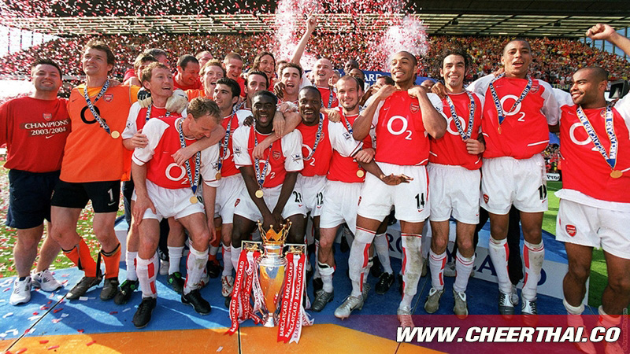
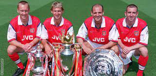

ทำเนียบรางวัล สโมสรฟุตบอลอาร์เซนอล
รายการระดับประเทศ
-ดิวิชัน 1 และ พรีเมียร์ลีก อังกฤษ
คว้าแชมป์ (13 ครั้ง) ได้แก่ : ฤดูกาล 1930-31, 1932-33, 1933-34, 1934-35, 1937-38, 1947-48, 1952-53, 1970-71, 1988-89, 1990-91, 1997-98, 2001-02, 2003-04
-เอฟเอคัพ
คว้าแชมป์ (13 ครั้ง) ได้แก่ : ฤดูกาล 1930, 1936, 1950, 1971, 1979, 1993, 1998, 2002, 2003, 2005, 2014, 2015, 2017
-ลีกคัพ
คว้าแชมป์ (2 ครั้ง) ได้แก่ : ฤดูกาล 1987, 1993
-คอมมิวนิตีชิลด์
คว้าแชมป์ (15 ครั้ง) ได้แก่ : ฤดูกาล 1930, 1931, 1933, 1934, 1938, 1948, 1953, 1991 (แชมป์ร่วม), 1998, 1999, 2002, 2004, 2014, 2015, 2017

รายการระดับทวีปยุโรป
-ยูฟ่า แชมเปียนส์ลีก
รองแชมป์ฯ : ฤดูกาล 2006
-ยูฟ่าคัพวินเนอร์สคัพ
คว้าแชมป์ฯ : ฤดูกาล 1994
-ยูฟ่าคัพ หรือยูโรปา ลีก
รองแชมป์ฯ : ฤดูกาล 2000
-ยูฟ่าซุปเปอร์คัพ
รองแชมป์ฯ : ฤดูกาล 1994
สถิติที่น่าสนใจ
อาร์เซนอลเป็น 1 ใน 4 สโมสรของอังกฤษ ที่ได้แชมป์ลีกติดต่อกันมากที่สุด คือ 3 ครั้ง ในฤดูกาล 1932-33, 1933-34, 1934-35
เมื่อสิ้นสุดศตวรรษที่ 20 ในปลายปี ค.ศ. 1999 อาร์เซนอลได้รับการจัดลำดับจากสำนักข่าวบีบีซีให้เป็น
ทีมฟุตบอลที่ดีที่สุดของอังกฤษในรอบ 100 ปี โดยพิจารณาจากสถิติ และปัจจัยต่าง ๆ โดยมีลิเวอร์พูล
และเอฟเวอร์ตัน เป็นอันดับสองและอันดับสามตามลำดับ
ในพรีเมียร์ลีกฤดูกาล 2001-02 อาร์เซนอลสามารถทำประตูได้ในทุกนัด เป็นสถิติสูงสุดของลีก
ในพรีเมียร์ลีกฤดูกาล 2001-02 อาร์เซนอลชนะติดต่อกัน 14 นัด
เป็นสถิติสูงสุดของพรีเมียร์ลีก (มีอีก 3 สโมสรคือ แมนเชสเตอร์ยูไนเต็ด, บริสตอลซิตี้,
เปรสตันอร์ธเอนด์ ที่ทำสถิติชนะติดต่อกัน 14 นัดเช่นกัน แต่ทั้งหมดนั้นเป็นสถิติในดิวิชั่น 2)

ในพรีเมียร์ลีกฤดูกาล 2003-04 อาร์เซนอลไม่แพ้ใครตลอดฤดูกาล 38 นัด
(ชนะ 26 เสมอ 12) เป็นครั้งแรกของพรีเมียร์ลีก และครั้งที่สองในประวัติศาสตร์ลีกสูงสุดของฟุตบอลอังกฤษต่อจาก
เปรสตัน นอร์ธเอนด์ ในฤดูกาล 1888-89 ซึ่งขณะนั้นมีการแข่งขันเพียง 22 นัดต่อฤดูกาล
อาร์เซนอลไม่แพ้ใครเลยในพรีเมียร์ลีกติดต่อกัน 49 นัด ระหว่างฤดูกาล 2002-03, 2003-04, 2004-05
ในพรีเมียร์ลีกฤดูกาล 2003-04 ที่อาร์เซนอลไม่แพ้ใครเลยตลอดทั้งฤดูกาล ได้รับการโหวตจากแฟนฟุตบอลให้เป็นสโมสรฟุตบอลที่ดีที่สุดของอังกฤษในรอบ 20 ปี โดยมีแมนเชสเตอร์ยูไนเต็ด
ในฤดูกาล 1998-99 ที่ได้ทริปเปิลแชมป์ หรือสามแชมป์ในฤดูกาลเดียวกัน เป็นอันดับสอง